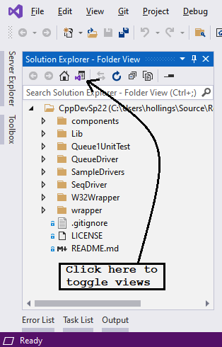

Opening Your Repo from VS2026
- While working on 373 assignments, always start up VS2026 with your CppDev repo
- The 4 screen shots below walk you through the process
1. Startup up VS2026 to get the splash screen

2. VS2026 after successful open of CppDev repo

3. Toggle between repo view and Solutions view

4. Solutions view after toggle